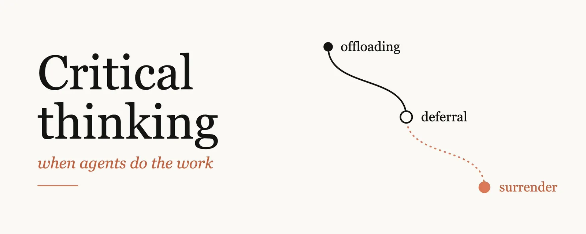
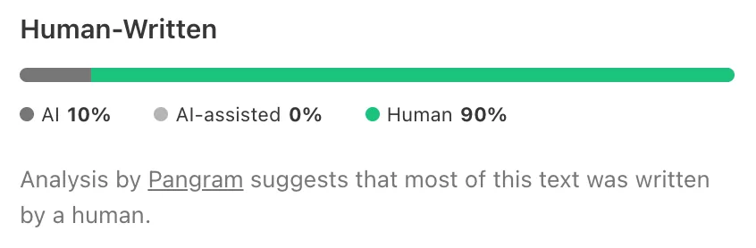

发布：2026-11-03 15:01（UTC+8），X Article。作者账号 @addyosmani（简介“Claude Code @anthropicai”，约 47.8 万关注）。互动数据（2026-11-03 22:47 UTC+8，经 X API 读取）：约 29.7 万次浏览、3,536 赞、433 转帖、146 引用、173 回复、6,599 收藏。截至读取时作者未在评论区回复。
导读
是谁写的。Addy Osmani，前 Google Chrome 工程负责人，现在 Anthropic 做 Claude Code。本站 10 月收录过他参与撰写的《Claude Code 团队怎么做代码评审》，本文多处回指那篇（“说不出检查会漏掉什么，就要一次真正的评审”）。这篇不讲团队流程，讲的是个人：每天跟一群智能体协作时，怎么不把自己的判断力一起交出去。
核心论点。过去，思考发生在“提问”和“得到答案”之间的那段空白里；现在这段空白只剩几秒。模型越强，明显的错误越少，输出“写得好、大体对”，于是不会让人想再看一眼。作者强调他不是在劝人少用智能体——他自己整天在用——而是说：默认情况下没有任何东西会替你做批判性思考，你得自己把它排进日程。
三档光谱。
- 认知卸载（offloading）：把任务交给 AI，但结果的所有权还在你手里。作者说他全天都这样做，也建议你这样做。
- 顺从（deferral）：工具的输出变成你的新输入，结果不再被当作“假设”。
- 认知投降（cognitive surrender）：AI 的输出悄悄变成你自己的观点，你不觉得需要核对。术语出自沃顿商学院 Steven Shaw 与 Gideon Nave 的论文。
滑落是渐进的：上一个回答读得很仔细，下一个就扫一眼，再下一个只看骨架；直到有人问起某一行，你连借助智能体都解释不了。这就是认知债（cognitive debt）和理解债（comprehension debt）积累的方式——代码库看起来很干净、测试全过，直到要改的时候才发现没人懂。
不是要求“全都懂”。大型代码库不可能装在脑子里。Claude Code 团队的做法是按需重建理解：要用哪一块，就让 Claude 讲哪一块。作者的标准是：你不必维持完整模型，只要能在需要时局部重建，并且知道自己缺了什么。低风险的事可以整个交出去（他举例：录课选酒店，直接让 AI 定）；投资、孩子的职业、要做什么产品、能不能上线——这些要自己留着推理。
可以直接拿去用的做法。
- 动手前先写下你猜的答案（哪怕很烂）；没头绪时请模型做一次“盲点扫描”。
- 问自己：这次是让它帮我想，还是替我想？要什么条件成立，这个结论才会错？——然后去查。
- 每个绿勾都写出它检查了哪个性质，再写出一个它没检查的性质。“完成”的标准事先定好：测试通过、截图、日志或 trace。
- 收到“完成”通知时，先看它执行的命令和输出，再看总结。
- 让智能体列出它替你做的决定和假设（默认值、哪些被划出范围、两条需求冲突时它改了哪条），然后随机挑几行考自己；有人让 Claude 在报告末尾出一份小测验，“全对才合并”。
- “编排税”：智能体产出的东西与你敢署名的东西之间的差距。积压得比你审得快时，再开一个会话没用——要么收紧检查，要么放慢。
- 需求说明自己写：受众、不做什么、完成的定义。第二轮修正还不对，就别再微调，重写提示词。
- 每周不用智能体写一点代码；每月写下你已经不做的事，并决定哪些可以放掉。
怎么读这篇。这是一篇观点文，不是研究报告：文中没有新数据，论据是作者的经验加上几篇引用（沃顿的认知投降论文、Margaret-Anne Storey 的认知债、Anthropic 关于内部工程师的调研）。它和本站已收录的几篇能连起来读：Thorsten Ball 《How I work with Agents》里“索要无可辩驳的证据”，Uncle Bob ub-mode 的“不读代码、度量代码”，以及 Google Elephant-Goldfish Model 的零上下文评审。区别在于，Osmani 更关心人这一端：检查可以交给机器，但“知道好的检查长什么样”和“为结果负责”交不出去。
核对与 ⚠️ 注记
- ✅ “认知投降”出自沃顿 Steven Shaw 与 Gideon Nave 的论文《Thinking — Fast, Slow, and Artificial》，与作者博客 Cognitive surrender 的说法一致（2026-11-03 核）。
- ✅ “监督悖论”原话确在 Anthropic 研究页 How AI is transforming work at Anthropic：“supervising Claude requires the very coding skills that may atrophy from AI overuse”（2026-11-03 核）。
- ⚠️ “理解债（comprehension debt）一词由 Jeremy Twei 提出”——作者的说法，本站在其《Comprehension debt》博文页面中未找到这个名字，未核实。
- ⚠️ “Claude Code 团队按需重建理解”“用 Claude Code 以全新上下文子智能体自我批评”等为作者（Anthropic 员工）对自家团队与产品的描述，未独立核实；本文也有替 Claude Code 工作方式背书的成分。
- ⚠️ 文末附图是 Pangram 的 AI 文本检测结果（AI 10% / 人写 90%）。AI 检测器本身误判率不低，只能当作者的自我声明看。
- “问一句‘我漏了什么’常能再挖出两三件事”是作者个人经验，非实验结论。
全文中译：智能体替你干活时的批判性思维
译自 Addy Osmani《Critical thinking when agents do the work》（X Article，2026-11-03）。小标题沿用原文结构，原文链接汇总在文末。
从前，人们是这样教批判性思维的：带着谦逊的好奇和适度的怀疑去接触新信息——吸收不同的观点，形成自己的看法。这话现在依然成立。但我的工作越来越多地经由智能体完成，日常里已经没有什么东西会逼我去做批判性思考了。对那些已经全面拥抱智能体工作流的工程师和产品人（同时跑好几个会话，并期待模型继续变强），我想说：我是这些工具的忠实拥趸。写这篇文章不是为了劝你少用智能体。
我的目的是帮你在“什么都能轻松甩给智能体”的世界里，保住批判性思维。
过去，我们大部分认知上和审美上的加工，发生在“提出问题”和“得到答案”之间的那段空白里。如今这段空白以秒计。你越用智能体工作流，这件事就越难（只是难的方式和人们预想的不同）：模型越强，明显错误的比例越低。很多（大多数？）输出都会写得很好、基本正确，但它们不会让你想再看第二眼。
就算你同时跑着很多个智能体，盯着输出的也还是只有你这一双眼睛。
你必须把批判性思维排进自己的一天，因为默认情况下，没有任何东西会替你做这件事。
这件事之所以难以自我纠正，部分原因在于智能体工作流用起来很舒服。在忙碌的一天里拿到又快、又顺、又经常正确的答案，让人神清气爽；但这也正是人容易放松警惕的原因。
卸载、顺从与投降
跟别人讨论这个话题时，我会把它描述成一条光谱：
最上面是认知卸载：把任务委托给 AI，但保留对结果的所有权。我整天都在这样做，你也应该这样做。中间是顺从：工具的输出变成你新的输入，结果不再是一个“假设”。最下面是认知投降：AI 的输出悄无声息地变成了你自己的，你觉得没有必要去核对。
“认知投降”这个词是沃顿商学院的 Steven Shaw 和 Gideon Nave 提出的。它恰好贴合我一直观察到的现象：随着信任（或者惰性）增加，人们沿着光谱往下滑。这种滑落很少被察觉，因为每一步都很渐进，看起来也都合情合理。上一个回答你读得很认真，于是下一个你就扫读；再下一个你只看个骨架。然后有人问起某一行，你解释不了——就算借助你的智能体也解释不了。
这就是认知投降。认知债就是这样积累起来的。通常要等到你想调用脑中关于这个系统的心智模型，却发现它根本不存在时，才会察觉。Margaret-Anne Storey 写过它在团队里的表现：大家对“系统共享理论”的理解在不断侵蚀。我写过它在代码上的对应物——理解债（这个词由 Jeremy Twei 提出）。当下它完全不可见：代码库看起来干干净净，测试全部通过。直到你要改动系统，才意识到已经没人理解它了。当你只读了战略文档或规格说明的目录就签字同意时，道理也一样。
需要说明的是，我并不是在鼓吹做不到的事。要在脑中维持一个大型现代代码库的完整心智模型是不可能的。Claude Code 团队公开说过，他们按需重建理解：需要弄懂某一部分时，就让 Claude 讲解那一片，而不是把整个模型装在脑子里。正如我以前写过的，这类债比大多数工程师以为的更容易偿还。只要你能在需要时局部重建，就不必维持完整的模型。你只需要知道自己缺了什么。
风险低的地方，尽管放手全部委托。当你连借助智能体都解释不了某个问题的答案时，你就已经让出了所有权。这也不总是问题。前不久我要录一门课，得从三家评分差不多的酒店里选一家做录制地点。我没时间把所有评价都看一遍，就把这个决定交给了 AI。效果不错，下次我还会这么做。但在决定怎么投资我们的钱、怎么给孩子的职业出主意，或者在工作中决定我们该做什么、哪些改动影响哪些用户、能不能安全上线时，我不会这样做。犯错代价低的地方，放手交接；后果要由别人承担的地方，推理自己留着。
我会问自己的问题
以前，当我不知道自己怎么想时，通常会回到一份最基础的问题清单：我怎么知道自己在解决正确的问题？我怎么知道自己的解法是对的？有没有证据支持我的结论？我怎么知道自己做完了？多数时候，这无非就是谁、什么、哪里、为什么、何时、如何。写出来显得幼稚得可笑，但它会逼你从那些平时会忽略的维度去思考。如今，人们太容易跳过这一切，直接问智能体“你觉得我该怎么做”。下面是我现在会问自己的新版问题。
提问之前，我有没有先形成一个假设？在让智能体做任何不简单的任务之前，我会写下——哪怕只是在脑子里——我认为答案可能是什么。猜错没关系，有了新信息随时可以改主意。可一旦读过一份写得很漂亮的回答，你就很难再想象别的可能了。如果你完全没有头绪，就请模型做一次 Thariq Shihipar 所说的“盲点扫描”：把你知道的告诉模型，让它帮你找出你不知道自己不知道的东西。
我是在让它帮我思考，还是在把思考从我身上卸下？两者都可以，只要你清楚自己在做哪一种。
要满足什么条件，这个结论才会是错的？然后去查清楚。模型对自身置信度的评估，远不如一个你真能执行的测试有价值——所以给它一个测试。
我有没有从另一个角度听过反方论点？当我在某个相对开放的问题上持强硬立场时，我会让不止一个模型去论证对立面，然后审读它们的输出，形成自己的看法。这样更花时间，但最后我对这个主题的了解会深得多。
当着以后要维护它的那个人，我敢不敢为它下注？这适用于代码，也适用于你交付的任何其他东西。我认为这就是“可问责”的标准线。
我已经不再练习的是什么？也许是一部分日常调试。放掉其中一些我可以接受，但我希望那是有意为之。
把验证变成习惯
最近我写了很多关于验证的东西，因为我相信瓶颈已经从“写代码”转移到了“确信自己是对的”。当你给智能体提供验证手段——无论是端到端测试、性质测试，还是真实的应用交互——它就能在你看任何东西之前，自己做改动、跑验证、读输出、再试一次。这就是 Boris Cherny 说的“给 Claude 一个验证自己工作的方法”，我认为这是取得好结果最关键的因素之一。你不再逐行阅读，而是搭建这些循环、审查证据。
但验证本身也可以被“投降”。“有没有证据支持我的结论？”变成了“检查变绿了吗？”智能体让写测试变得如此便宜，你会看到大片绿色；可你也可能有一个通过了、却抓不到功能坏掉的测试。如果测试和功能犯了同一个错，它就会通过。而且一个绿勾只说明一种性质，人很容易以为它覆盖了一切。
每看到一个绿勾，就说出它检查的是哪个性质；再说出一个它没检查的。
事先定义“已验证”，因为事后你会为任何结果找理由。智能体工作的终点线应该是有形的东西：一个通过的测试、一张截图、一段日志或 trace。这样，“做完了”的标准是事实，而不是可以凭“看起来做完了”来解释（乃至投降）的东西。收到智能体的完成通知时，先别看总结，先看它执行的命令片段和输出。
Claude Code 也能（通过一个全新上下文中的子智能体）自我批评它的工作，作为一道合理性检查；值得把它固化进循环里，让它每次都跑，而不是想起来才跑。最后我仍然会问一句“我漏了什么吗？”听起来很傻，但很多次，我用前沿模型做完一个复杂功能、看过、审过，再问“我漏了什么吗？”——它还会再拿出两三件事。所以我每次都问。
当然，这些都不必成为常态；知道什么时候该深挖，本身就是一种技能。我们那篇关于 Claude Code 团队怎么做代码评审的文章里，我最喜欢的一条经验法则是：“如果你说不出这些检查会漏掉什么，就去要一次真正的评审，而不是快速批准。”
这也不只适用于代码。如果智能体替你综合了五十通客户电话，或者做了一份竞品分析，去抽查几份原始文档，确认总结是准确的。你的建议依赖哪个数字，就去核对那个数字算得对不对。
智能体让验证的搭建成本变得很低。对你来说，难的是知道好的验证长什么样。
真正去看它生成了什么
假设智能体给了你一个 600 行的 PR。你大致看了看结构，没有逐行读。变量名看着合理，测试也通过了，于是你批准了。但中间某处，事务边界里有一个细微的顺序变化，或者某个你从没想过的边界情况的默认值被翻转了。你确实审过了，我想——但只审了你本来就知道会找到的东西。
写代码和审代码是两种不同的技能，审查到了某个点就会变成橡皮图章。所以，读 diff 时要当它不是 AI 写的；然后越过 diff，去看智能体替你做了哪些决定。在一个长会话里，它会替你做很多小决定：默认值、什么划在范围之外、两条需求冲突时它重新解释了哪一条。
这些在一份“一切顺利”的总结里你都看不到，所以要让它列出它做过的决定和假设。然后考考自己：随机挑几行，问自己这一行是怎么回事？那一行呢？如果是文档，就合上它，凭记忆写出主要论点。有些人在长会话里有个我很喜欢的习惯：让 Claude 写一份关于这次改动的报告，末尾附一份测验，规则是“测验全对，我才合并”。
对你要发布的东西，理解到足以为它辩护的程度。因为总有一天，会有人问起。
智能体也能替你守护注意力。比如，我有一个开源项目收到大量 pull request。我会用智能体帮忙判断进来了什么、哪些违反了我们的准则、哪些地方可能需要我亲自关注。我很少让智能体自己拍板，但它们能把范围缩小到我该聚焦的地方，然后我才能真正思考：这些改动是不是在用正确的方式解决正确的问题。
然后是量的问题，你必须对自己诚实。我把它叫作“编排税”：智能体生成的东西，与你愿意署上自己名字的东西之间的差距。如果完成的工作堆积得比你处理得快，再开一个会话也无济于事，除非你先解决这个问题：收紧检查，让需要你过目的东西变少；或者放慢速度。
当你产出的东西多于你能担保的东西时，你已经不是在审查了，你是在祈祷。
输入的质量决定输出的质量
人的心智模型仍然在场，只是不再处在中间，而是在开头和结尾：你把精力投在前端的任务描述和上下文，以及后端的输出审查上。这就是为什么好的输入对输出质量如此重要，也是为什么我把好的提示词视为一种批判性思维技能。
过去，你提出一个含糊的请求，会有人追问，然后你可能意识到：“哦，等等，这个我其实还没想清楚。”智能体往往不会在这里拦住你。它会把你漏掉的部分填上，交回一个看起来已经完成的东西，哪怕背后的想法依然模糊。我把这称为“意图债”：存在于那些不是你写的产物里的隐含目标、约束和理由。和其他类型的债不同，这笔债没人能替你还。意图必须来自你。
你的提示词反映了你对问题的理解；如果你表达不清楚，那它在你自己脑子里可能也不清楚。
在求助之前，先用自己的话写一份需求说明：写清受众、不做的范围，以及“完成”的定义。如果第二轮修正后还没达到目标，就别再微调了，重写你的提示词。
这件事你也可以让智能体帮忙。我喜欢 Andy Clark 对“委托给 AI 系统”和“与之协作”所做的区分。在后一种情况下，你处于一个相互放大的良性循环里：你的提示词让输出更锋利，输出让你的下一个提示词更锋利，也让你对问题的心智模型更锋利。如果哪里不清楚，就让智能体就它不理解的地方来采访你。如果关掉会话时，你自己的心智模型变得更精确了，那就是成功的信号。
也要当心输入。每个智能体很容易只是把上一个智能体的总结塞进自己的上下文，用不了多久，第三个智能体就根本没读过原始文档了。
你还需要自己的输出标准。我在很多不同的创作媒介上试玩过 AI，其中大部分从没给人看过，因为它达不到我的标准。所有东西出来都格式漂亮、语气自信，所以“打磨得好”已经不再是一个有用的信号。
AI 也许让产出变快了，但如果我不愿意把这个输出归在自己名下，我就不会发出去。
当某个东西达不到你的标准时，把原因记在共享配置、一个 hook 或一个测试里，让它不再发生。品味就是这样复利增长的；而记下“为什么没入选”本身也是好习惯。
“可模型以后会比我更擅长这个”
如果你像我身边很多人一样看好这个领域的未来，前面几节读下来你大概已经冒出过这个念头：再过一两年，模型就能发现我能发现的问题，那我何必还要维持这项技能？
在很多“发现问题”的事情上，你可能是对的；我自己也一直主张把越来越多的检测推给智能体。但我认为它依然重要的原因在于：说到底，总得有人为发布出去的东西负责。不管 AI 帮了多少忙，承担责任的必须是一个人。
对某个具体任务该信任智能体到什么程度，这本身就是一个判断。保持校准的一部分就是审查工作，因为模型出错的地方一直在变。Anthropic 自己针对其工程师和研究员的研究，把这个陷阱称为“监督悖论”：“监督 Claude，恰恰需要那些可能因过度使用 AI 而退化的编码技能。”
下面这些是对我最重要、而且不会因为模型变强就被解决的事：你在做什么？为什么值得做？它影响谁？你愿意牺牲什么？这些问题都需要你来回答。智能体可以帮你把它们想透，我也希望它能帮上忙，但归根结底，它们仍然是你的问题。
你可以把工作和大部分审计卸下，但卸不下责任。
日常练习
这些你不必一板一眼地全做，挑适合你工作流的接上就行。
每周一次，不用智能体写一点代码，或者做一件“要是忘了怎么做就糟了”的真事。（我把它叫作校准练习，但我没有道德说教的意思。）每月一次，写下你已经不再做的事，并决定其中哪些你可以接受不做。我一篇旧博文里的问题至今依然有效：如果 AI 不存在，你会有多迷茫？
如果某样东西超出了你的理解，就去学它。写作时遇到一个没见过的说法，我可以 Google 一行解释塞进去；但我更愿意做一点研究、真正弄懂它，这样才能看清它在整体里的位置。
认真检查机器的产出是真正的工作，假装它不是，就是团队最终不做它的原因。它不是免费的，所以把它当成一项单列的工作排进计划，你才会真的做完。
你不再练习的技能会消失，而且可能比你想象的更快。那些你不愿放手的技能，就继续练。
带走这些
- 有意识。智能体可以考你、采访你、给你看它的证据，但前提是你设置好。那就去设置。
- 诚实看待自己在光谱上的位置。如果连借助智能体都解释不了答案，你就已经投降了。
- 先有假设。提问之前先形成一个，哪怕很烂。
- 一个绿勾只代表一件事。它检查了什么？没检查什么？
- 找证据。先读它运行了什么、返回了什么，再读总结。
- 读出它做了哪些决定。它替你决定了什么？
- 打磨提示词。你怎么写提示词，说明你对问题理解了多少。
- 定一条线，并守住它。你不愿署名的东西，就不发出去。
亲手运用那些重要的技能，让自己留在场上。你可以试一件事：提问之前，写下你认为会发生什么；智能体做完之后，写下一件它没有检查的事。告诉我这是否改变了你阅读输出的方式。独立思考。问更好的问题。为结果负责。

原文引用链接
按原文中的出现顺序整理（去重），本站未逐一打开核对，标 ✅ 的除外。
- 沃顿 Shaw & Nave 认知投降论文：SSRN 6097646；作者博文 Cognitive surrender ✅
- Margaret-Anne Storey：Cognitive debt；作者：Comprehension debt
- Thariq Shihipar 盲点扫描：A field guide to Claude Fable: finding your unknowns
- 验证：Agentic verification；Boris Cherny 的原帖；The 80% problem in agentic coding
- 代码评审：Solving code review at Anthropic（本站导读：Claude Code 团队怎么做代码评审）；Code review in the age of AI
- 编排税：Orchestration tax；意图债：Intent debt、O’Reilly Radar 版
- 旧文：Critical thinking during the age of AI、Avoiding skill atrophy in the age of AI
- Anthropic 研究：How AI is transforming work at Anthropic ✅；另引 PubMed 40389440